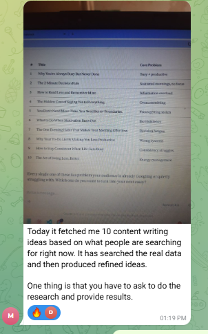
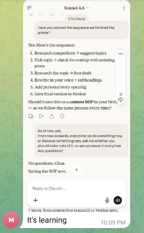
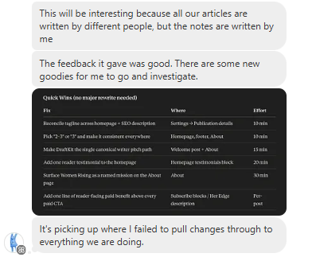
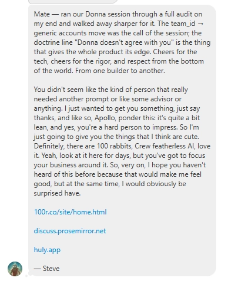

Next week’s what to write, what’s working, and what’s next — decided, drafted, and scheduled in one sitting.
You sit in Claude. Donna loads your Notion. You approve. The extension schedules what you chose.
No payment needed to start · $30/month after trial · Cancel anytimeWhat to write. What’s working. What’s next. Here is what actually happens every time you open Claude to answer them:
By the time Claude is ready to help, you are already tired. And the output? Generic. Because it does not know you. It knows what you just typed in that session.
This is the Context Tax — the hidden cost every Substack creator pays, every single day, every single time they open a new chat. You are not building with AI. You are briefing a stranger who forgets you exist the moment the tab closes.
You have already proven the idea works. The thing still eating the week is not talent or consistency. It is deciding what to write, reading what’s working, and choosing what’s next — then briefing an AI that forgot last week’s answers.
You sit in Claude. Donna loads your Creator Portrait from your Notion — voice, audience, strategy, past decisions, what’s already live — before she writes a word. You approve what goes. A small Chrome extension schedules those approved pieces on your Substack calendar.
Then the week closes: what to write, what’s working, what’s next — proposed, drafted, approved, and scheduled before you stand up.
You open Claude. Donna loads your context. You leave with next week’s pieces chosen, drafted, and on the calendar. Nothing publishes in that moment. It is scheduled for the times you set.
No more briefing. No more rebuilding. No more leaving a pile of drafts with no decision about what actually goes out.
Your Creator Portrait lives in your own Notion. Not on our servers. We do not store your strategy or your content. You own it. You control it. It goes where you go.
Donna already knows your flywheel, gaps, last pieces, and voice. She proposes next week’s pieces and drafts them in your lane. You decide which ones go.
She reads what you already published and what the synced notes show people responded to. She does not open your Substack analytics dashboard.
You choose what goes out and when. Donna drafts it. The extension puts it on the calendar at the times you set. It does not publish until that scheduled time.
Every session starts with niche, voice, audience, strategy, and past decisions already in. That is what makes one sitting possible.
Decisions, drafts, and plans land as pages in your workspace — titled, dated, searchable. The 2nd brain stays yours.
The sitting is the product. The video goes here when you record it.

10 content ideas from live search data — one session.

7-step content SOP built and saved to Notion.

Quick Wins audit — specific fixes in one session.

Steve — after his first full audit.
“Walked away sharper for it. Respect from the bottom of the world.”
Receive your unique Donna URL and setup guide immediately. No payment is taken until your 7-day trial ends.
Copy. Paste. Done. No coding required. The setup guide walks you through every step with screenshots.
Donna introduces herself, connects to your Notion, and runs audit_substack with your Substack URL. Takes about 5 minutes.
You approve. Drafts land on the calendar — scheduled, not published — before you close Claude.
You do not need to be. Setup is a single line you copy and paste into one settings file. If you can send a Substack email, you can install Donna.
Notion's free plan is all you need. Donna creates and manages the workspace pages for you.
No. A free Claude account is enough. ChatGPT is not required at all.
Donna builds a voice reference from your published work. It will not be perfect on day one. It will not sound like a content mill. It improves as the portrait gets richer.
Cancel anytime. No questions. Your Notion data stays yours.
Your Creator Portrait lives in your Notion — not on our servers. We only store the email used to activate your account.
Trial: 100 credits. Then 250 credits every month on the $30 plan. A full audit costs 3. A complete essay costs 3. Notes, hooks, plans, and checks cost 1. Getting started and reading your Substack are free.
Every week you spend re-deciding what to write, guessing what’s working, and slipping what’s next is a week the publication stays shallower than the business you already have.
You are already making money on Substack. The hard part is proven. What is left is a 2nd brain that remembers last week and finishes this week’s calendar in one sitting.
Donna is that 2nd brain.
If you hired humans to answer the same three questions — what to write, what’s working, what’s next — this is what that stack costs. Donna is not those three people. She is the sitting that closes those three questions, in your voice, with your context, for $30/month.
And that's before counting your time. Open Claude three times a week and spend 15 minutes rebuilding context — 3 hours a month. At $30 an hour the Context Tax is $150. More than Donna. Just in setup friction.
What's included: 7-day trial with 100 credits. Then 250 credits every month.
7 days free. No payment needed to start.
After the trial: $30/month. Cancel anytime.
Day one: Donna in Claude, your Creator Portrait built, and a sitting that can leave next week decided, drafted, and scheduled.